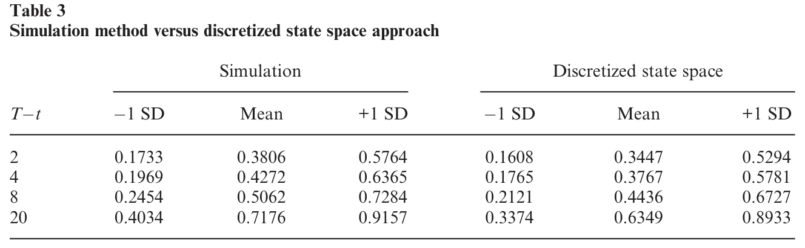
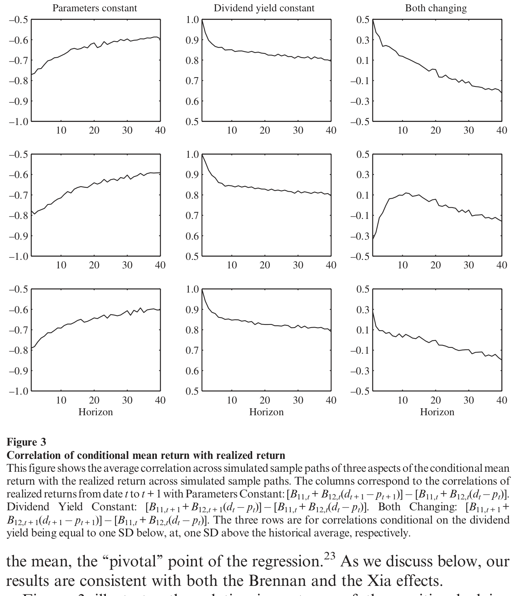
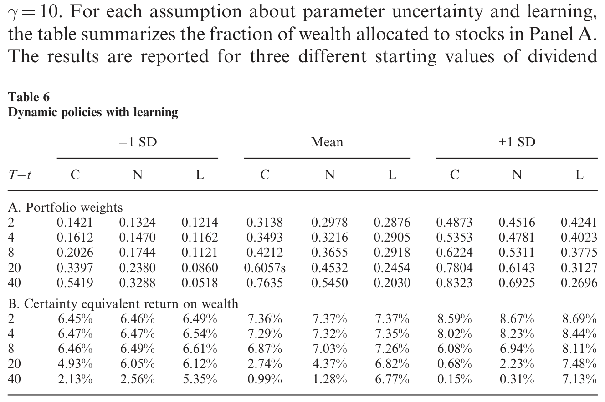
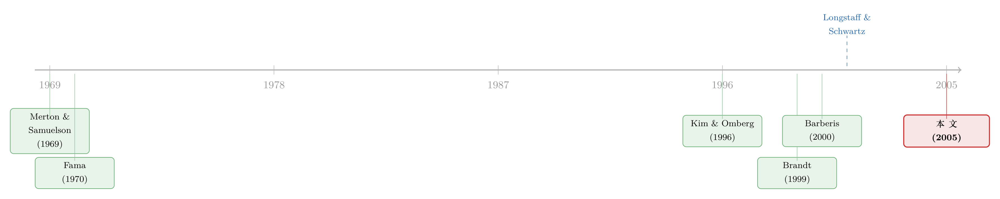

把「天书」一样的动态组合，交给一台会做回归的模拟器
本文读的是 Brandt, Goyal, Santa-Clara & Stroud (2005, Review of Financial Studies)：他们借用给美式期权定价的「最小二乘蒙特卡洛」思路，提出一种「先模拟、再做横截面回归、最后逐期倒推」的方法，把过去被判了「计算上不可行」死刑的高维动态组合选择问题盘活了。作为压轴的应用，他们让一个投资者一边相信股息率能预测收益、一边对参数心里没底地「边走边学」——结果发现，学习带来的负向对冲需求，反过来盖过了可预测性带来的正向对冲需求，整个最优策略的符号都被改写了。
1 一个被「维数」卡住的老问题
动态组合选择（dynamic portfolio choice）是一个很老的问题。老到什么程度呢？它的奠基工作可以一路追溯到 Merton (1969, 1971)、Samuelson (1969) 在连续时间里的经典推导，以及 Fama (1970) 在离散时间里的对应物。这些工作告诉我们一件很美的事：当投资机会会随时间变化时，一个有远见的长期投资者不会只盯着「这一期的均值-方差」，他还会去对冲未来投资机会的变动——这就是所谓的对冲需求（hedging demand），也是动态与短视（myopic）组合选择的分水岭。
可问题是，这套理论虽美，能算出闭式解（closed-form solution）的场合却屈指可数。你得把投资者的偏好、收益的动态都摆成恰到好处的形状，才能像 Kim & Omberg (1996)、Liu (1999a)、Wachter (2002) 那样把解写出来。（关于 Liu 那一支把整个组合问题压缩成一个常微分方程的优雅做法，可参见《把投资组合的「天书」解到只剩一个常微分方程》。）现实里的投资者可没那么听话。
于是大家退而求其次，用数值方法。最流行的一条路，是离散化状态空间（discretizing the state space）——Balduzzi & Lynch (1999)、Brandt (1999)、Barberis (2000)、Dammon, Spatt & Zhang (2001) 都走这条路，把状态变量切成网格，再用倒向递归把贝尔曼方程一期一期解回来。还有 Brennan, Schwartz & Lagnado (1997) 直接求解刻画最优解的偏微分方程，Campbell & Viceira (1999) 把一阶条件和预算约束做对数线性化，Das & Sundaram (2000)、Kogan & Uppal (2000) 做各种价值函数展开。
这些方法都管用，但都撞上了同一堵墙：维数灾难。一旦状态变量多起来、动态又复杂起来，离散化的网格点数会指数爆炸，根本算不动。可偏偏，最有意思的那些组合问题——比如投资者一边相信收益可预测、一边还要学习自己究竟该相信多少——恰恰就是「状态变量一大堆、动态还非线性甚至非平稳」的那一类。论文里给了个吓人的数字：一个用来刻画股息率可预测性的标准 VAR 模型只有 7 个参数，可一旦把它的贝叶斯后验也当成状态变量塞进去，整个问题就由 11 个状态变量来刻画，而且它们的演化依赖于新观测到的收益、股息率、它们的平方与交叉项——明摆着是非线性的。也难怪，把学习完整地装进离散时间组合选择，长期以来被认为「计算上不可行」。
这就是张力所在。接着，一个自然的问题是：有没有办法绕开网格，让维数不再成为诅咒？
2 真正关键的一步：把「条件期望」交给横截面回归
作者的灵感来自一个看似八竿子打不着的地方——美式期权定价。Longstaff & Schwartz (2001) 有一个著名的「最小二乘蒙特卡洛」（least-squares Monte Carlo）方法：模拟一大堆价格路径，然后用跨路径的回归去估计「继续持有期权的条件期望价值」，再拿它和立即行权的价值比较。
Brandt 等人抓住的，正是这个「用跨路径回归来评估条件期望」的念头。但他们用得更狠：在期权定价里，条件期望只是用来做一个「行权 vs 继续」的比较；在这里，条件期望要被当成组合优化的输入，喂进每条路径上的最优化里去。
先把投资者的问题摆出来。一个在期末 T 才消费财富的投资者，在 N 个风险资产和一个无风险资产之间反复调仓，要解的是
$$V_t(W_t, Z_t) = \max_{\{x_s\}_{s=t}^{T-1}} E_t\big[u(W_T)\big]$$
约束是逐期的预算方程
$$W_{s+1} = W_s\big(x_s' R^e_{s+1} + R^f\big), \quad \forall\, s \ge t,$$
其中 \(x_s\) 是 \(s\) 时刻投到风险资产上的权重，\(R^e_{s+1}\) 是超额收益向量，\(R^f\) 是无风险毛收益，\(Z_t\) 是投资者掌握的信息（一组状态变量）。把多期问题用迭代期望法则折成单期，就得到大名鼎鼎的贝尔曼方程（Bellman equation）
$$V_t(W_t,Z_t) = \max_{x_t} E_t\Big[V_{t+1}\big(W_t(x_t'R^e_{t+1}+R^f),\, Z_{t+1}\big)\Big],$$
对应的一阶条件（FOC）是
$$E_t\Big[\partial_1 V_{t+1}\big(W_t(x_t'R^e_{t+1}+R^f),\, Z_{t+1}\big)\, R^e_{t+1}\Big] = 0.$$
这个 FOC 一般只能数值求解——它是个含高阶积分的非线性方程组。困难在于那个条件期望 \(E_t[\cdot]\)：它是对下一期收益与信息的联合分布求的，正是维数灾难的来源。
但真正关键的一步在于：作者不去直接算那个积分，而是先把价值函数在「财富按无风险利率增长」这一点 \(W_t R^f\) 附近做泰勒展开。二阶展开之后，FOC 就有了一个漂亮的（半）闭式解：
你看这个解多眼熟——它其实就是「风险的倒数乘以风险溢价」，一个被价值函数导数加权的均值-方差形式。换句话说，整个动态问题，被压成了两个条件期望的计算：一个关于二阶矩（风险），一个关于风险溢价（收益）。
那这两个条件期望怎么算？这才是全篇的灵魂：用跨路径的最小二乘回归。具体说，在 \(T-1\) 时刻，把每条模拟路径上 \(T\) 时刻实现的效用、效用的导数、以及资产收益，对 \(T-1\) 时刻状态变量的基函数（basis functions）做横截面回归——回归的拟合值，就是我们要的条件期望（条件在状态变量上的矩）。算出 \(T-1\) 期的最优权重后，算法就这样一期一期地倒推回时间零点。
整个方法于是被拆成三个动作，干净利落：模拟资产收益与状态变量的若干条样本路径 → 对每一期做一组跨路径回归 → 在每条路径上评估那个近似组合问题的闭式解。维数灾难为什么消失了？因为回归并不在乎状态变量有几个、动态有多复杂——它只是在拟合一个函数。状态空间高维、路径依赖、甚至非平稳，对模拟和回归来说都无所谓。
二阶展开有时不够准——当效用函数离二次型很远、或收益离正态很远时尤甚。所以作者实际用的是四阶展开，把偏度（skewness）和峰度（kurtosis）对效用的影响也纳进来。四阶展开的解是隐式的，但解起来很简单：拿二阶解当初始猜测 \(x_t^{(0)}\)，代入隐式方程右端解出 \(x_t^{(1)}\)，迭代几次就收敛。作者还发现一个经验规律：方法对展开阶数远比对展开点敏感——二阶和四阶结果能差很多，但换个展开点几乎没区别。
3 这方法,到底准不准
一个新方法，最该先回答的问题不是「能不能算更难的」，而是「在能算的地方，算得对不对」。作者很克制地先在最简单的设定上做体检：股票指数与现金之间的两资产组合，收益要么是 iid、要么由股息率可预测。
iid 那一档是用来检验泰勒展开本身的误差的——结论是，泰勒展开引入的近似误差极小（这个结论对带高阶矩的静态组合问题也独立地有用）。可预测收益那一档，则是用来和传统方法（Brennan-Schwartz-Lagnado、Balduzzi-Lynch、Brandt、Campbell-Viceira、Barberis 等）对表的——结论是，本方法给出的解和那些传统方法一致。作者还专门做了一个蒙特卡洛实验，量化模拟本身引入的噪声：最优权重的模拟误差、以及对应的财富确定性等价收益（certainty equivalent return）损失，都可以忽略。

Table 3: provides a direct comparison of our solution method to the
换句话说，这台「模拟器」不是用精度换来的通用性——它在老方法的地盘上交出了一样的答卷，然后才走向老方法去不了的地方。
4 反转：当投资者开始「边走边学」
体检通过，正餐上桌。作者把方法对准了那个一直被认为「不可行」的问题：一个贝叶斯学习（Bayesian learning）的投资者。
设定和 Barberis (2000) 一模一样：收益看起来能被股息率边际地预测，但投资者不确定数据生成过程的参数。可关键的区别在于——Barberis 假设投资者在初始决策（日期 0）到期末（日期 T）之间，对参数的信念保持不变，只反映期初那一刻掌握的信息；而本文不这么假设。本文让投资者随着每一次新的收益与股息率实现，去更新信念、去学习真实参数。投资者在期初做决策时，就已经预见到「未来的数据会带来关于真参数的有用信息」，并把这件事考虑进当下的组合里。
这是一道极难的题，难就难在它有 11 个非线性、可能非平稳的状态变量——正是前面说过的那只拦路虎。也正因为难，它成了检验这套方法「肌肉」的最佳擂台。
然后，反转出现了。
按照过去的直觉，相信股息率能预测收益，会带来一个正向的对冲需求：因为收益与股息率的创新负相关，股票在「坏时光（股息率升高、预期收益升高）」里反而能提供对冲，长期投资者会因此多配股票。这是 Barberis 一脉的结论。
可一旦把学习也放进来，故事就变了味。论文的机制讲得很清楚：一个正向的收益冲击，会让投资者向上修正对（无条件和/或条件）预期收益的估计——这在投资者主观上意味着「未来投资机会变好了」。而要对冲掉「自己会因为好消息而上调预期」这件事，理性的做法是……减持股票。于是学习带来了一个负向的对冲需求。
而本文最重要的发现是：在他们的实验里，学习带来的负向对冲需求，压过了可预测性带来的正向对冲需求。两股力量符号相反，净效应是负的。

Figure 3: illustrates the relative importance of the positive hedging
这个「净效应为负」的结论分量很重，因为它说明：学习不是给原来的答案打个补丁，而是能在定性上改写动态组合选择的解。一个忽略学习的投资者，可能会因为「看到了可预测性」而加仓；一个把学习算进去的投资者，反而会因为「预见到自己将来会过度乐观」而减仓。参数不确定性和学习，两者都倾向于压低投资者对股票的配置。

Table 6: examines the dynamic portfolio choice for an investor with
作者还顺手回答了一个实务上很要紧的问题：如果不能完整地建模学习，那「部分地」考虑学习，值不值得？答案是肯定的——以财富的确定性等价收益衡量，部分地纳入学习，也好过完全忽略它。这一点和我此前读过的另一篇把「学习」当成核心难题来啃的工作彼此呼应（参见《你以为在问「分析师靠不靠谱」，其实在解一道学习的难题》）。
5 文献脉络
把这条线索捋一捋，它其实是两条河的交汇。
一条河是动态组合选择本身：从 Merton (1969, 1971)、Samuelson (1969) 的连续时间奠基，到 Fama (1970) 的离散时间对应，再到只在特殊参数化下才有闭式解的 Kim & Omberg (1996)、Liu (1999a)、Wachter (2002)。当闭式解不够用，文献转向数值方法——Brennan, Schwartz & Lagnado (1997) 解 PDE，Campbell & Viceira (1999) 做对数线性化，而 Balduzzi & Lynch (1999)、Brandt (1999)、Barberis (2000)、Dammon, Spatt & Zhang (2001) 则各显神通地离散化状态空间。它们共同的天花板，是状态变量一多就算不动。
另一条河来自计算方法：Longstaff & Schwartz (2001) 用跨路径回归给美式期权定价，den Haan & Marcet (1990) 用「参数化期望」解动态宏观模型，Detemple, Garcia & Rindisbacher (2003) 在完全市场假设下用模拟解连续时间组合问题。

本文站在两条河的汇流处：它把 Longstaff-Schwartz 的「模拟 + 回归」搬进动态组合选择，从而第一次让「同时学习风险溢价、可预测性、以及预测变量自身的矩」这样一个相当现实的离散时间问题——按作者所言，是文献中第一篇给出这类「关于收益生成过程全部参数的学习」之解的工作——变得可解。至于学习本身这条支线，则要接上 Brennan (1998)、Barberis (2000) 关于学习「无条件风险溢价」的工作，以及 Xia (2001) 关于学习「可预测性」的工作；本文的贡献，是把这些此前彼此割裂的力量第一次放进同一个离散时间框架里同时求解。
（如果你对「不相信自己估出来的均值」这件事在静态组合里的后果感兴趣，可参见《当你不再相信自己估出来的那个均值》。）
6 评论与延伸（Q&A + 研究方向）
(a) 几个可能的疑问
Q：这方法和 Longstaff-Schwartz 到底差在哪？不就是换了个壳？
差别是实质性的。Longstaff-Schwartz 用条件期望做一个「继续 vs 行权」的离散比较；本文把条件期望当成组合优化的连续输入，每条路径上都要解一个（近似的）最优化问题。更重要的是，本文做的是有限期、可路径依赖、可非平稳的问题，而像 den Haan-Marcet 那种沿单条路径的参数化期望，本质上只能处理平稳的无限期问题。跨路径回归才是松开「有限期 + 非平稳」这把锁的钥匙。
Q：泰勒展开会不会把问题做坏了？毕竟价值函数被砍成了多项式。
这是最该担心的点，作者也最当回事。他们用 iid 情形专门隔离出「泰勒展开误差」，结论是二阶就已经很小，四阶（带进偏度、峰度）在他们试过的各种问题上「非常准」。而且经验上方法对展开阶数敏感、对展开点不敏感——这给了实践者一个清楚的调参方向：先加阶数，别纠结展开点。当然，对于偏离二次型更远的效用或更厚尾的收益，需要的阶数会更高，这是个开放的精度-成本权衡。
Q：「学习带来负向对冲需求」是不是反直觉？好消息不该让人更想买股票吗？
短视地看是这样，但对冲讲的是另一回事。好消息让投资者上调对预期收益的主观估计，也就是「未来投资机会变好了」。一个长期投资者想对冲的，恰恰是「投资机会变动」这个风险源。既然好消息=机会变好，那么减持股票才能对冲掉「机会上行」带来的财富波动。符号就是这么来的——它衡量的是收益与「信念更新」之间的相关性，而非收益本身的好坏。
Q：这个负向对冲压过正向对冲，是普适结论还是参数依赖？
诚实地说，这是在他们那套具体设定（股息率可预测、特定先验、特定期限）下的数值结论，不是定理。论文自己也强调：Xia (2001) 早就指出学习诱发的对冲需求，其符号和大小都取决于期限和预测变量的当前取值。所以「净效应为负」更应被读作「学习足以定性改写解」的一个有力例证，而不是「学习永远让人减仓」的铁律。
Q：先验（prior）选得不同，结论会不会翻盘？
很可能会受影响。作者特意提到，若用 Black & Litterman (1992)、Connor (1997) 那种有经济动机的非共轭先验，后验会由更多状态变量刻画、动态甚至变得非平稳。这正是本方法的卖点（它不怕状态变量多），但也意味着定量结论对先验设定是敏感的——这是贝叶斯组合选择共同的软肋，不是本文独有。
Q：有了机器学习，今天还需要这套泰勒展开 + 回归吗？
思想内核惊人地现代——「模拟生成数据、再用灵活的函数逼近条件期望」正是当下许多「机器学习 + 金融」工作的骨架（比如把结构模型蒸馏成查找表的思路，见《把结构模型「蒸馏」成一张查找表：深度代理与期权定价》）。差别只是逼近器从「基函数 + 最小二乘」换成了神经网络。所以与其说它过时，不如说它是这条路线在 2005 年的一个干净原型。
(b) 几个可能的研究问题与提案
1. 把这套模拟器搬到公司债组合上
【经济故事】公司债的收益分布厚尾、偏斜，且高度依赖信用利差、流动性、违约强度等一堆状态变量——正是「非正态 + 高维状态」的典型，本方法的四阶展开（吃偏度峰度）和「不怕状态变量多」两个特性都对得上。 【可行性】中。数据上 TRACE 成交 + 利差/流动性指标可得；难点在于公司债的非线性收益和违约跳跃要建模进模拟阶段，且回归基函数的选择对厚尾资产更敏感，需要仔细验证近似精度。
2. 外资持有人作为「会学习的边际投资者」
【经济故事】跨境投资者对东道国市场的参数（风险溢价、可预测性）往往比本地人更不确定，学习速度也更慢。把本文的「学习诱发负向对冲」机制放到外资身上，能预测：信息冲击后外资的减仓，未必是恐慌，而可能是「预见到自己将上调预期」的理性对冲。 【可行性】中偏低。机制清楚、故事漂亮，但要把「学习」与「风险厌恶」「流动性冲击」在数据里分离开非常难，识别上需要一个能外生地改变「参数不确定性」的冲击（如市场开放、信息披露改革），doable 但不轻松。
3. 学习与流动性的交互：当「调仓」本身有成本
【经济故事】本文的对冲需求建立在「随时可无成本调仓」之上。一旦加入交易成本或市场冲击，「预见到自己会学习」与「懒得动」之间会打架——负向对冲需求可能被交易成本部分抵消。 【可行性】高。本方法天然能容纳组合约束与交易成本（论文已点明可扩展），只需在模拟-回归框架里加一层成本惩罚，是较直接的方法论延伸，适合做一篇扎实的计算金融论文。
4. 先验异质性如何放大或熨平市场波动
【经济故事】若不同投资者带着不同先验进入市场、又都在学习，他们的对冲需求符号可能彼此相反，加总后对总需求曲线和价格波动的影响是开放问题。这把单人组合问题接到了资产定价的均衡层面。 【可行性】低。从「部分均衡的组合选择」走到「一般均衡的价格」需要额外的市场出清结构，模拟方法本身不够，识别更难，属于雄心大但回报高的方向。
7 我的判断
这篇文章的贡献，我认为主要是方法论上的解放：它把「维数灾难」这堵墙，用一个朴素到近乎狡猾的办法——模拟 + 跨路径回归——绕了过去，从而让一类此前被宣判「不可行」的现实组合问题（最典型的就是带学习的离散时间问题）变得可解。而它的「副产品」——四阶展开对带高阶矩的静态组合也独立有用、以及「部分学习也比不学习好」的实务结论——同样值钱。从今天回看，它的思想骨架（模拟生成数据、用灵活逼近器估计条件期望）几乎就是当代「机器学习解金融模型」的前身，这份前瞻性值得记一笔。
我对结果的担忧主要有二。其一是近似误差的边界：论文的精度论证建立在他们试过的那些具体问题上，泰勒展开在更厚尾的资产、更极端的偏好下需要几阶才够，是个没有一般性保证的经验问题——把方法搬到公司债、期权这类强非正态资产上时，这一点必须重新逐案检验。其二是学习结论的稳健性：「负向对冲压过正向对冲」这个漂亮的反转，依赖于特定的先验、期限和预测变量取值，Xia (2001) 早已提醒符号本身会随期限和状态变量翻转。所以我会把它读作「学习足以定性改写解」的存在性证明，而非定量铁律。
我接下来最想看到的，是有人把这套模拟器认真地用到信用市场上去：公司债的厚尾、跳跃和高维状态，恰恰是这台机器的主场，而那里的「学习」与「流动性约束」交互，可能藏着比股票市场更丰富的故事。
参考文献
- Balduzzi, P., and A. W. Lynch (1999). Transaction Costs and Predictability: Some Utility Cost Calculations. Journal of Financial Economics 52, 47–78.
- Barberis, N. (2000). Investing for the Long Run when Returns are Predictable. Journal of Finance 55, 225–264.
- Black, F., and R. B. Litterman (1992). Global Portfolio Optimization. Financial Analysts Journal 48, 24–43.
- Brandt, M. W. (1999). Estimating Portfolio and Consumption Choice: A Conditional Euler Equations Approach. Journal of Finance 54, 1609–1645.
- Brennan, M. J., E. S. Schwartz, and R. Lagnado (1997). Strategic Asset Allocation. Journal of Economic Dynamics and Control 21, 1377–1403.
- Campbell, J. Y., and L. M. Viceira (1999). Consumption and Portfolio Decisions when Expected Returns are Time Varying. Quarterly Journal of Economics 114, 433–495.
- Das, S., and R. K. Sundaram (2000). A Numerical Algorithm for Optimal Consumption-Investment Problems. Working paper, Harvard University.
- den Haan, W. J., and A. Marcet (1990). Solving the Stochastic Growth Model by Parameterized Expectations. Journal of Business and Economic Statistics 8, 31–34.
- Detemple, J. B., R. Garcia, and M. Rindisbacher (2003). A Monte Carlo Method for Optimal Portfolios. Journal of Finance 58, 401–446.
- Fama, E. F. (1970). Multiperiod Consumption-Investment Decisions. American Economic Review 60, 163–174.
- Kim, T. S., and E. Omberg (1996). Dynamic Nonmyopic Portfolio Behavior. Review of Financial Studies 9, 141–161.
- Kogan, L., and R. Uppal (2000). Risk Aversion and Optimal Portfolio Policies in Partial and General Equilibrium Economies. Working paper, University of Pennsylvania.
- Liu, J. (1999a). Portfolio Selection in Stochastic Environments. Working paper, UCLA.
- Longstaff, F. A., and E. S. Schwartz (2001). Valuing American Options by Simulation: A Simple Least-Squares Approach. Review of Financial Studies 14, 113–147.
- Merton, R. C. (1969). Lifetime Portfolio Selection under Uncertainty: The Continuous-Time Case. Review of Economics and Statistics 51, 247–257.
- Merton, R. C. (1971). Optimum Consumption and Portfolio Rules in a Continuous-Time Model. Journal of Economic Theory 3, 373–413.
- Samuelson, P. A. (1969). Lifetime Portfolio Selection by Dynamic Stochastic Programming. Review of Economics and Statistics 51, 239–246.